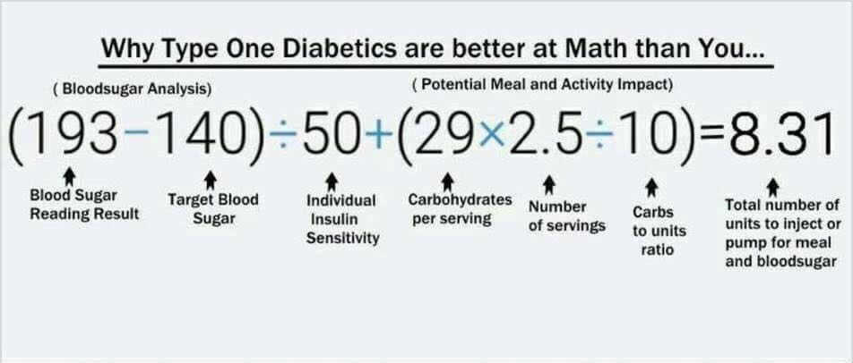

Overview¶
In the context of the following discussion, the term "settings" refers to information that the user has typically entered into their pump. These settings include:
- basal rate schedule
- insulin sensitivity factor (ISF)
- carbohydrate to insulin ratio (CR)
- glucose target range
- duration of insulin activity (DIA)
Typically, most people with type 1 diabetes consult with their endocrinologist to develop and revise their settings. The endocrinologist usually reviews the patient's blood glucose and treatment history at each appointment to assess whether settings need to be adjusted. There are several great books available about the topic (Think Like A Pancreas and similar)
Why settings matter¶
Loop is primarily a set of math equations called an algorithm. The recommendations and actions that Loop takes are based on that algorithm, and the settings you enter in your Loop app are the basis for that math.
Let's start by thinking about basal rates. A well-adjusted basal schedule is designed to keep your blood glucose steady throughout the day, everything else being equal. If you were to not eat, not exercise, and basically keep a mellow lifestyle...basals should keep your blood glucose steady.
That is how Loop's math starts, and it's an important point to remember as you use and learn your Loop app. Loop's math is based on the assumption that the basal schedule you have provided in your settings are capable of keeping your blood glucose steady in the absence of other stressors. So as your blood glucose goes higher than your correction range for an unusual short-term influence like stress or unannounced carbs, you've been accustomed to delivering a "correction bolus" to get back to range. Or if blood glucose goes below your correction range, you may need to eat recovery carbohydrates.
With all the excitement about automated insulin delivery, some people mistakenly assume that the user's settings don't matter anymore....that everything is automated. However, settings do still matter as they provide the basis for Loop's math. Diabetes is not a static math equation. Loop does not adjust your settings for you, that responsibility still falls to the Loop user when needed.
Let's give some examples to help. When you calculate a meal bolus, your math probably looks similar to this:

But many times you are probably adjusting that math based on any number of "factors" that you are aware could be affecting your blood glucose. Diatribe put together this great list of factors that affect blood glucose, and therefore could also affect how you'd adjust your insulin delivery from what they otherwise would normally be.

Some of those factors you are already used to making allowances for, such as:
- Pizza boluses...You probably are accustomed to needing an extended bolus and/or higher temporary basal rate to help with the late blood glucose spike common after the initial bolus starts to wear off. That pizza takes a long time to digest thanks to those slow-acting fats.
- Medications...How about that time that you had to take steroids for an achy joint? Those steroids probably resulted in a dramatic overall increase in insulin needs for several days, and you had to set aggressive temporary basal increases or other settings adjustments.
- Hormones...monthly hormone cycles have many women adjusting their basal rates and/or insulin sensitivity schedules for a week or so each month.
- Exercise...always a tough one because some exercise may make your blood glucose rise (lifting weights) and other exercise may make your blood glucose drop (running). Through repetition, most people have learned how to adjust for exercise by using temporary basal rates or timing of meals/boluses.
The degree to which Loop can deal with those stresses/factors is largely dependent on the duration of the "factor" itself and how well we can communicate to Loop that those factors are at play. For things we know are coming, we can tell Loop in advance, and Loop has ways of dealing with them mathematically. In the pizza example, Loop lets us mark the meal as long, slow digestion, and therefore better react to a potential late blood glucose rise. For exercise, we can use temporary override blood glucose targets before/after exercise to help Loop administer less insulin for awhile.
If, however, your insulin needs are impacted by something more long term such as hormone cycles, medications, or illness then sometimes your Loop may not be able to consistently hold you at your desired blood glucose. You may end up holding steady at a higher/lower blood glucose than you'd prefer. This is because Loop's math is still using the inputs that were from before you got sick/stressed/hormone'd (new word). Then the decision becomes "Do you adjust your settings now or just wait it out until the stressor goes away?"
When do you need to change settings?¶
If the inputs to those math equations (i.e., your settings) are not accurate, your results for blood glucose control may also not be optimal.
Your basic insulin settings are what keeps your blood glucose steady without stressors present. For much of the time, the stressors in type 1 are short-lived and temporary (we just ride them out)...carbohydrate count is a little off, math test in algebra class, public speaking engagement, etc. Loop does well helping with the short-term stressors. They don't represent a prolonged need to change settings and the blood glucose impacts are short-lived as Loop corrects for them.
However, the longer term stressors are often helped by settings adjustments. Examples of longer term stressors are medications, illness, hormones, travel, or altitude. By letting Loop know that the status quo has changed (more/less insulin is needed overall) will help BGs get and stay in range. If you have told Loop that your insulin need is 1 unit/hour, but in reality, you're needing 1.3 units/hour because you've traveled to a colder place and will be sedentary for days...you will likely find yourself steady but higher than your target range while Looping. The high temporary basals that Loop will be providing in an attempt to bring you back to target will simply be going to fill the lack of adequate basal scheduled. If you update your basal schedule to reflect 1.3 units/hour of basal needs, Loop would be better positioned to provide needed insulin delivery to keep you in the target range.
Automated settings adjustments¶
A common sentiment among new Loop users goes something like "Why doesn't Loop see that I'm stuck on a high blood glucose? Why doesn't it bring me back to my target blood glucose?"
What the user is actually implying is that the user thinks Loop should be doing some sort of retrospective analysis on the user's blood glucose and data to make a "better" decision. The user wants Loop to learn from recent data and adjust.
There is a short-term retrospective analysis built into Loop which will apply a weighted-correction based on the past 60 minutes of blood glucose changes. While this does help some, larger-scale "learning" is not currently a part of Loop's algorithm.
Perhaps in subsequent versions of Loop, auto-adjustment of settings or machine learning could be incorporated. Until then, you will need to tell Loop if your underlying settings need updating or make temporary adjustments for short term issues. These pages in LoopTips are written to help you identify when settings may need adjustment or when other techniques may be useful in given situations.